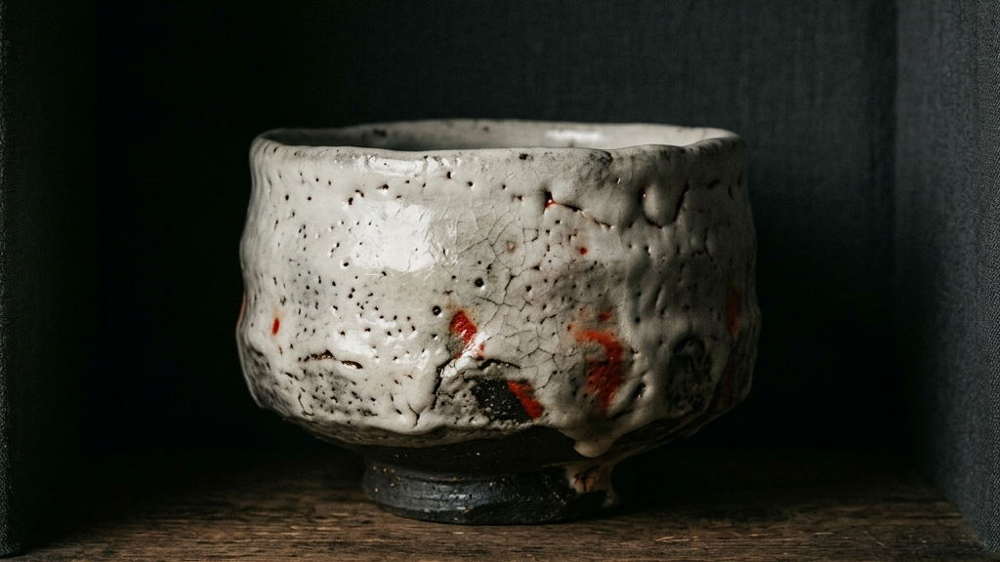
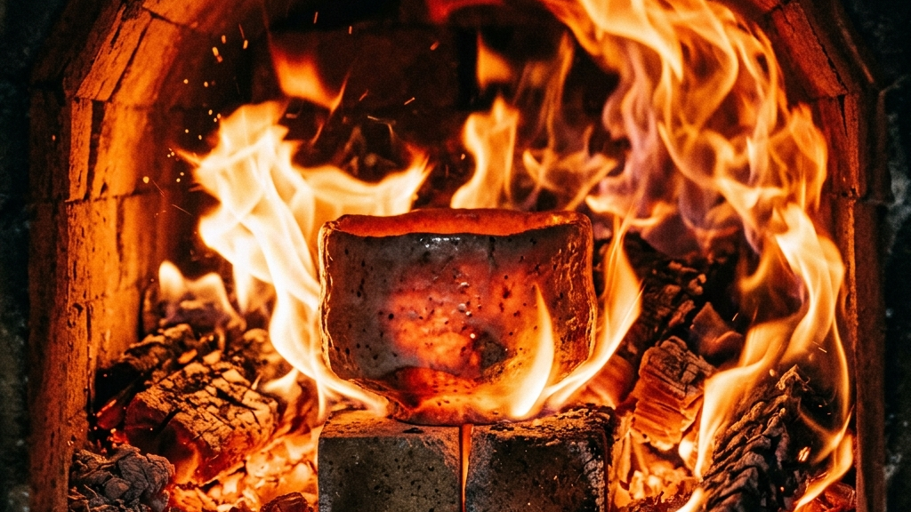
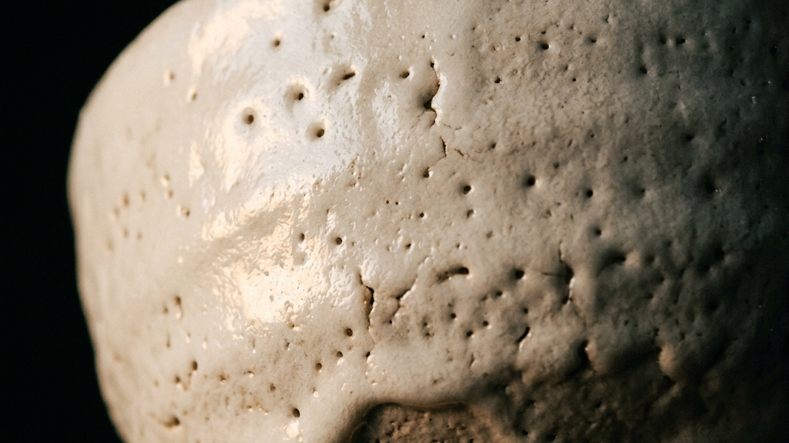
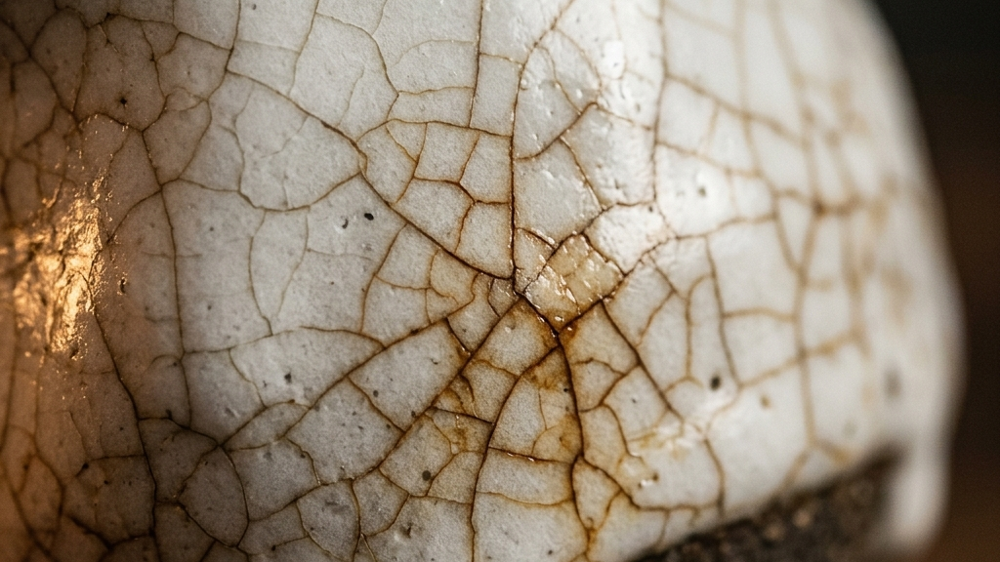
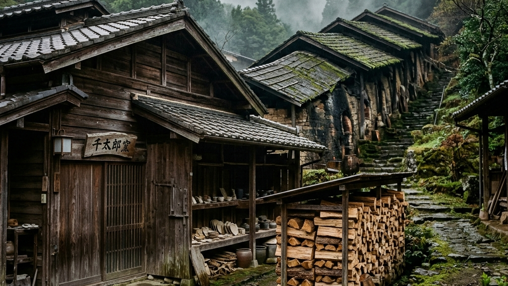
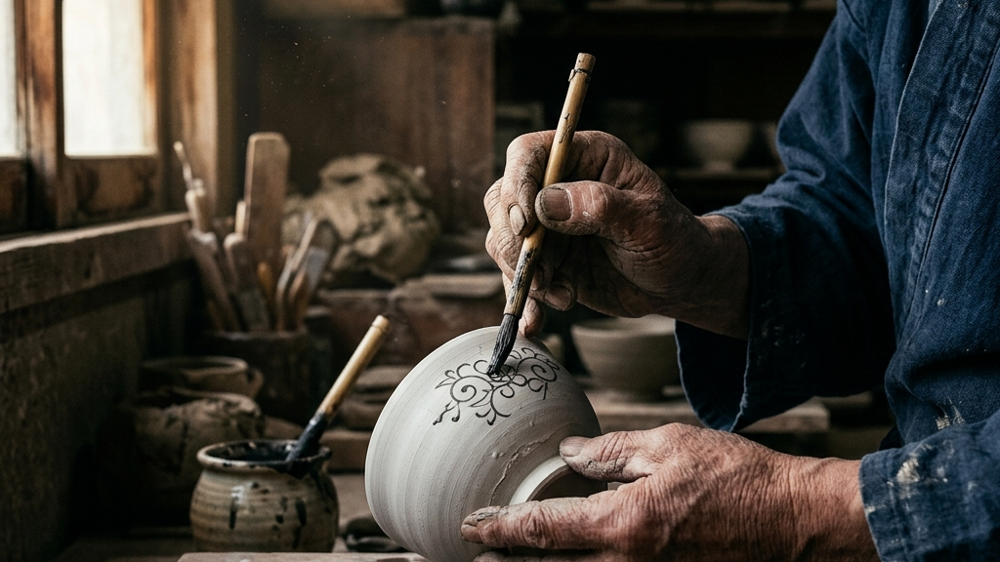
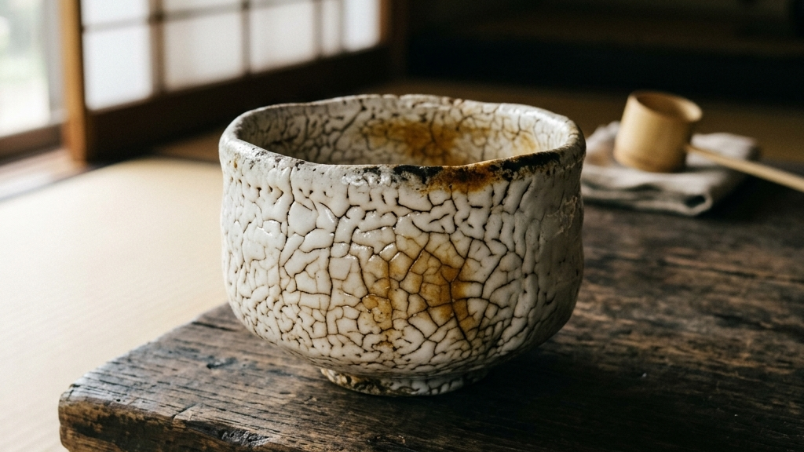
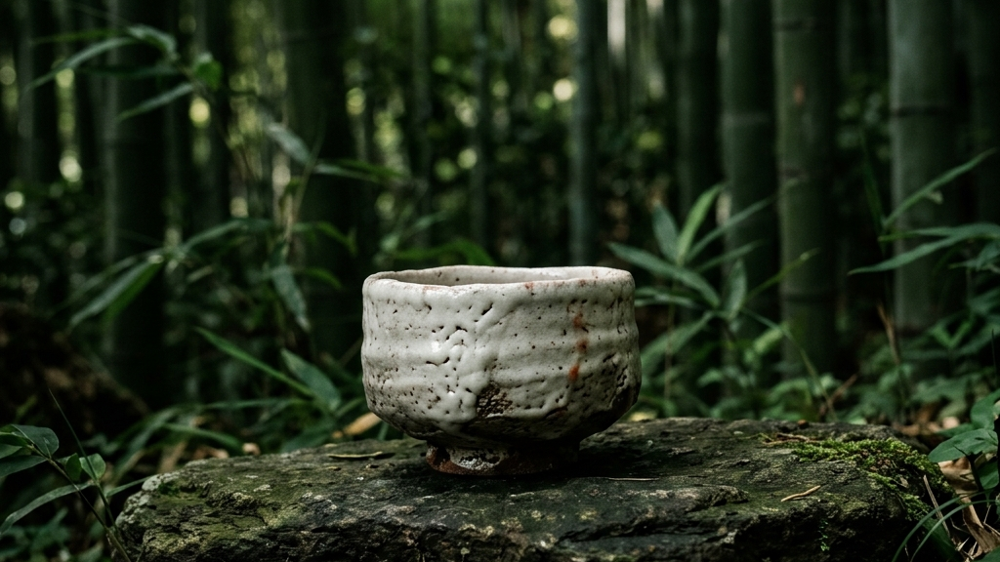

陶土と炎が織りなす極限の空間において、白の深淵を追い求め続ける職人がいます。美濃焼の源流を受け継ぎ、令和五年度に多治見市の無形文化財「志野」の保持者に認定された陶芸家、安藤工氏です。昨日、松坂屋名古屋店で開幕した作陶展は、土と制御不能な炎との対話が生んだ「生きた奇跡」の顕現です。均一な工業製品に囲まれた現代において、安藤氏の志野焼は、自然の理不尽さと人間の執念が境界線上で切り結んだ、まさに「世界資産」とも呼ぶべき強度を宿しています。
【本稿で紐解く3つの核心】
安藤工氏が紡ぎ出す白の質感は、現代社会が追い求める均一で冷徹なホワイトとは一線を画しています。どこか人の体温を感じさせるような温かみを帯び、光を吸い込んでは静かに放つその表面には、気の遠くなるような職人の泥臭い身体感覚が刻まれています。本稿では、無形文化財保持者という絶対的な高みに到達した安藤氏の作陶の深部へ潜り、彼の志野焼がなぜこれほどまでに多くの人々の心を揺さぶり、静かな対話へと誘うのか、その精神世界と超絶技巧を解剖します。

作陶の現場において、陶芸家は自然界で最も制御しがたい二つの要素と直面します。それは大地の化身である土と、天を焦がす炎です。特に美濃の山々から切り出される「もぐさ土」は、粘土質が粗く、極めて脆いという物理的性質を抱えています。水を含ませて捏ねる段階から、土の粒子は職人の手指にざらりとした激しい摩擦を伝えてきます。安藤工氏はこの理不尽とも言える素材の気難しさを力でねじ伏せるのではなく、その脆さを包み込むように優しく触れ合い、形へと編み上げていきます。土の声を聴き、土の呼吸に合わせるという行為は、己のエゴを徹底的に削ぎ落とす修業そのものです。
「土と呼吸を合わせるということは、己の思い通りに動かそうとするエゴを捨てることである」
— 美濃の古窯跡に宿る職人の声
成形された器が直面するのは、数日間にわたって昼夜を問わず薪が焚べられる穴窯の過酷な熱量です。窯の内部は千二百度を超える灼熱の地獄と化し、薪の灰が舞い、炎の竜巻が器の表面を激しく愛撫します。このプロセスにおいて、職人はもはや観客となるしかありません。温度計の数値だけでは測りきれない炎のうねりは、完全に人間の制御を超越した他者そのものです。炎がどちらへ流れるか、どの器に灰を落とすかは、窯の神聖な意思にゆだねられます。職人はただ、祈るように薪をくべ、炎の機嫌を伺い続けることしかできないのです。この完全な不確実性のなかに、志野焼の真なる美が宿ります。
この炎の荒ぶる洗礼によってのみ生み出されるのが、志野焼特有の「緋色（ひいろ）」の発色です。釉薬の下から滲み出るように現れるその赤は、酸化鉄が炎の酸素を奪い合う中で生まれた化学反応の痕跡であり、大地の心臓の鼓動を可視化したかのような生々しい温かみを帯びています。それは、かつて土の中に眠っていた太古の記憶が、熱風というエネルギーを得て再び蘇生した瞬間でもあります。この美の現前は、人間の計算によって精緻に組み立てられた工業製品からは絶対に得られない、自然と人間が極限の境界線上で切り結んだ対話の果てに得られる世界資産です。それは、炎という圧倒的な他者を受け入れた者だけが手にすることができる、奇跡の色彩なのです。
Soil and Fire Interaction
無釉の焼き物が土と炎の直接的な衝突を宿すのに対し、志野焼はそこに長石という鉱物からなる白い長石釉を一枚介在させます。この白い皮膚が炎の熱を絶妙に和らげ、時に激しく融解し、時に結晶となって器の肉体を優しく包み込みます。この白と赤の相克が生み出す静謐な表情は、観る者の脳の奥深くに眠る野生の感性を揺さぶり、静かな言葉なき対話へと引きずり込みます。このような土と炎の極限の絡み合いは、まさに佐賀玉屋「BEYOND THE BIZEN」 田土と灼熱が織りなす無釉の造形美が示す無釉の凄絶な美学と好対照を成しつつも、土と火という根源的な二元論において深く共鳴しているのです。

安藤工氏が追求する「白」は、決して周囲の色を拒絶するような無機質で絶対的な白ではありません。それは、あらゆる色彩を飲み込みながらも、なおその奥に無限の深部を湛えた「包容の白」です。志野焼の最大の魅力とされるこの白は、原料である長石が火の力でガラス化し、微細な気泡を無数に内包することによって生まれます。この気泡が外光を乱反射させることで、まるで新雪が太陽の光を浴びて淡く発光しているかのような、柔らかく温かい空気の層を器の周囲に作り出すのです。この光の奥行きこそが、安藤氏の志野焼に神秘的な生命感を与えています。
この乳白色の皮膚は、日本の伝統的な美意識である「引き算の美学」の極地を示しています。西洋の陶磁器が完璧な均一性と過剰なまでの彩色や金彩の装飾によって自己の存在価値を主張するのに対し、安藤氏の志野焼はむしろ自らの形を削ぎ落とし、加飾を最小限に抑えることで、周囲の空間に広大な余白を切り開きます。器がそこにぽつりと存在するだけで、周囲の雑音が消え去り、澄み渡るような静寂が空間を支配し始めます。これは、現代の喧騒の中で感覚をすり減らした私たちが最も必要としている、静かな精神的リハビリテーションの場でもあります。削ぎ落とされた空間にこそ、豊かな知覚の広がりが生まれるのです。
安藤氏はこの白の上に、象嵌などの技法を用いて繊細な紋様を施す「志野彩文」という独自の境地を開拓しました。白い長石釉を透過して浮かび上がるその黒い線は、あたかも吹雪の彼方に見え隠れする冬の樹木の枝のように儚く、しかし力強い生命の脈動を感じさせます。描かれた線そのものよりも、その線の周囲に広がる圧倒的な白の空間、すなわち「何もないことの豊かさ」こそが、観る者の想像力を刺激し、己の内なる記憶を投影するためのスクリーンとして機能するのです。この余白の操作法は、工芸における精神性の極みであり、引き算の美学がもたらす静謐：1919年創業の老舗が描く現代の干支工芸が提示する静寂のデザイン論とも緊密に重なり合っています。
安藤氏の白は、単なる表面上の美しさを超えて、作り手と使い手の精神的な邂逅を促す沈黙のインターフェースとなっています。私たちはその白を見つめる時、かつて見た冬の早朝の静けさや、誰にも邪魔されない孤独な時間の安らぎを思い出します。器が何も語らないからこそ、私たちは自らの心の内にある言葉をその白に沈め、自己の深部と対話することができるのです。このように物質を極限まで削ぎ落とし、そこに精神の「知層」を織り込む安藤工氏の姿勢は、伝統工芸がただの骨董品ではなく、現代人の精神を救済するための切実なアートピースであることを厳かに証明しています。その白は、物質的な豊かさに溺れる現代社会に対する、静かなる抗議でもあります。

安藤工氏が焼き上げる志野焼の表面を精緻に観察すると、まるで繊細な蜘蛛の糸や、氷河の表面に走る亀裂のような微細な線の網目が見る者を捉えます。これは陶芸用語で「貫入（かんにゅう）」と呼ばれる現象です。貫入は、窯の中で高温に熱された陶土の肉体と、その表面を覆う長石釉の皮膚が、冷却される過程で収縮する比率の差によって生み出されます。土よりも収縮率が大きいガラス質の釉薬が、冷めゆく過程で悲鳴を上げるようにして自ら引き裂かれ、その亀裂が美しい模様となって定着するのです。窯が冷える際、キィン、ピンと甲高いガラスの悲鳴のような音が窯内に響き渡る瞬間は、器に命の傷跡が刻まれる厳粛な儀式に他なりません。
「自ら裂けることで、器は初めて息を吹き返し、呼吸を始める」
— 美濃の薪窯を管理する職人の口伝
この現象は、工業製品の論理から見れば明白な欠陥であり、割れや傷というネガティブな評価に直結します。しかし、日本の茶の湯の世界や美濃の作陶の現場においては、この不完全性こそが所有する喜びの根源とされてきました。なぜなら、貫入は窯から出た瞬間で完成するわけではないからです。茶を点て、日々器を愛用し、その亀裂の隙間にゆっくりと茶渋や年月という名の時間が染み込んでいくことで、線はより深みのある褐色へと変化し、器全体の表情が徐々に育っていきます。使い手の手の中で日々変化し続けるそのプロセスそのものが、工芸品に唯一無二の命を吹き込みます。不完全さを受け入れ、それを美へと昇華させる寛容さが、ここにはあります。
安藤氏は、この自然の裂け目と人間の生活が融和していく時間の経過を、極めて高い解像度で捉えています。計算された作為的な美しさではなく、時間とともに崩れていくことや、物質が経年変化していくことの無常さを受け入れる姿勢です。これは、単に古いものを崇める懐古主義ではありません。むしろ、完璧さを追い求めるがあまり、変化を恐れて硬直化していく現代人の心に対して、変化することの瑞々しさを説く静かな対話なのです。この不完全性のなかに宿る時間性の獲得は、まさにアノニマスの痕跡と不完全なる美。時間を吸収する工芸が切り拓く、新たな審美の地平が示す、経年変化という美学の究極の証明に他なりません。傷こそが、その器の生きた軌跡となるのです。
千二百度の灼熱から急速に冷却される過程で、土と釉薬の収縮差により微細な貫入が刻まれます。それは窯のなかでキィンと鳴るガラスの産声です。
日々の生活で茶を点て、触れ合うことで、亀裂に時間が染み込み、器の表情が一生をかけて深化します。使い手の人生が器に転写される瞬間です。
貫入の走り方は、土の厚みや釉薬の調合、さらには窯の中の配置によって一つ一つ全く異なります。安藤氏が削り出した器の肌に走る貫入は、時に荒々しく大らかであり、時に細密で静謐な幾何学模様を描きます。それはまるで、かつて地球が冷え固まる際に地殻に刻まれた断層の縮図のようであり、私たちの内なる野生を静かに刺激します。この土とガラスの宿命的な不一致がもたらす美しい傷跡は、私たち自身の不完全さや脆さをも温かく許容してくれるような、大いなる包容力を器に与えているのです。完璧を求める強迫観念から解き放たれ、傷と共に生きる美しさを、志野の貫入は静かに教えてくれます。

安藤工氏が体現する「白」の精神世界は、突如として現代に出現したものではありません。それは、岐阜県多治見市市之倉という、美濃焼の深遠なる知層が四百年以上にわたって積み重ねられてきた大地の歴史の結晶です。安藤氏が四代目として重責を担う「仙太郎窯」は、美濃の土と共に生き、土と共に滅びる覚悟を決めた職人たちの血脈が連々と受け継がれてきた神聖な作陶の現場です。伝統を守るということは、単に過去の意匠や型を無批判にトレースすることではありません。それは、先人が自然との闘いの中で培ってきた美意識の根源を、己の身体へと引き写す果てしない承継の旅路なのです。四代目という伝統の重圧を背負いながら、安藤氏は自らの身体感覚を研ぎ澄まし、現代に生きる志野の魂を削り出しています。
千利休や古田織部らの茶の湯の発展に伴い、日本独自の白い釉薬を用いた志野焼が美濃の地で誕生。茶人たちの美意識を席巻します。その白は、当時の美意識におけるアヴァンギャルドでした。
多治見市市之倉において、初代安藤仙太郎が窯を開く。美濃焼の伝統技法を守りながら、時代に即した日用工芸から美術工芸への橋渡しを行います。泥臭い手仕事が、近代化の波のなかで独自の光を放ち始めました。
荒川豊蔵による桃山志野の古窯跡発見を経て、失われかけた伝統技法が息を吹き返します。四代目・安藤工氏はその伝統を現代アートの視座で継承し、市の無形文化財保持者に認定されました。歴史と現代が、彼の指先で交差しています。
市之倉の地は、江戸時代から美濃焼の主要な生産地として栄え、特に目の細かい「もぐさ土」と豊かな薪に恵まれていました。仙太郎窯は、その豊かな自然の恵みを預かりながら、一世紀以上にわたり志野焼の純粋性を守り続けてきました。安藤工氏は幼少期から、窯の煙と土の匂いに囲まれて育ち、言葉による説明ではなく、父や祖父の張り詰めた背中を見つめることで職人としての身体感覚を養ってきました。それは、近代的な教育システムが削ぎ落としてしまった、「見て盗み、身体で覚える」という極めて土着的な知の伝承プロセスです。言葉にできない暗黙知こそが、彼の作陶の絶対的な背骨となっています。
昭和に入り、失われかけた桃山志野の復興に生涯を捧げた人間国宝・荒川豊蔵氏の偉大な足跡は、安藤氏にとっても超えるべき巨大な道標となりました。荒川氏が美濃の古窯跡から志野の破片を発見し、当時の製法を執念で突き止めたことで、志野焼は単なる歴史的骨董品から、現代に生きる芸術表現として蘇生したのです。安藤工氏が追求する現代の志野焼は、その荒川豊蔵氏の執念を受け継ぎつつも、自らの現代的な感性を注ぎ込むことで、四百年の歴史に新たな知層を上書きしています。この歴史的血脈は、まさに民藝運動の精神的支柱であり、用の美の証明：河井寬次郎と濱田庄司の哲学が問う「所有の形」が投げかけた、作意のない自然な美と職人の生き様という本質的な問いかけと深く響き合っているのです。歴史という土壌の上にしか、真に新しい葉は茂りません。

無形文化財保持者という栄誉の裏側には、華やかな脚光とは無縁の、泥臭く気の遠くなるような職人の日常が存在します。安藤工氏が四代目として受け継ぐ多治見市市之倉の「仙太郎窯」は、美濃焼の伝統を何代にもわたって守り抜いてきた聖地です。しかし、その伝統を守り続けるということは、かつての型を機械的にコピーすることではありません。むしろ、日々変化する天然の原料や気候条件と対峙しながら、毎回ゼロから「本物」を作り出すための過酷な闘いです。昨日と同じ土、同じ炎は二度と存在しないという冷徹な事実の前に、職人は常に裸の身体で挑み続けなければなりません。
「一度でも妥協した瞬間、そこにあるのは生きた器ではなく、死んだ土の塊にすぎない」
— 美濃の作陶を支える絶対的な矜持
安藤氏の作陶プロセスは、徹底的に非効率です。自ら厳しい山に入り、土の性質を手指の感覚だけで見極め、長石の鉱物を細かく砕いて釉薬を調合します。冬の凍てつく山の中で土を掘り出す肉体的な摩擦は、脳内だけで組み立てられたデザイン論を嘲笑うかのような過酷な現実を突きつけます。さらに、現在ではボタン一つで温度管理ができる電気窯やガス窯が普及しているにもかかわらず、安藤氏はあくまで薪を用いた「穴窯」での焼成にこだわり続けます。穴窯での焼成は、一度火を入れれば何日間も一睡もせずに窯の温度を監視し、体力の限界を超えて重い薪を投げ入れ続けなければなりません。それは、己の身体を削り、煙と熱気にまみれながら土と炎の間を取り持つ、凄絶な肉体的修行そのものです。
この泥臭い身体感覚の徹底こそが、安藤氏の作品に圧倒的な手触り感と熱量を与えています。彼は、単に見た目の美しい器を作っているのではなく、自らの手の痕跡や、炎との壮絶な格闘のプロセスそのものを器の中に凝縮しているのです。この物質との泥臭い対話は、頭の中で完成させたデザインを効率よく３Ｄプリンタで出力するような現代の創造行為とは対極に位置しています。素材と身体が真っ向から衝突し、互いに妥協できない限界点で結ばれることでしか到達できないこの境地は、まさに引き算の造形美。「工芸の表現四人展」が提示する、素材と身体の純粋な対話が暴いた、身体性の尊さと完全に一致するものです。身体を通さずして、魂を揺さぶる工芸は生まれません。
The Process of Obsession
このような極限の泥臭さの中で、安藤氏はただひたすらに「最高の白」を追い求めます。昨日から始まった松坂屋名古屋店での認定記念展に並ぶ器たちは、そうした数え切れないほどの「失敗の山」の頂点に屹立する、ごく一握りの生存者たちです。昨日まで窯を開けた瞬間に、思い通りの白が出ずに自らの手で粉々に打ち砕かれた器は数知れません。その過酷なまでの完璧主義と、決して歩みを止めない執念こそが、無形文化財という絶対的な称号を引き寄せた真の原動力なのです。この圧倒的な手仕事の純度は、まさに完璧のその先へ。人の手にしか宿らぬ熱量と、江戸東京から世界へ放つ「何が生まれる？展」の深層が指し示す、人間の手の絶対的な強度の具現化に他なりません。人間としての尊厳を、彼は土に刻み込んでいます。

安藤工氏の手から放たれ、窯の炎の洗礼をくぐり抜けた志野焼の器たちは、コレクターのキャビネットに静かに安置されるための死んだ美術品ではありません。それらは、私たちの日常の食卓や茶の湯の席において、温かい生命を通わされることで初めて完成へと向かう「未完のアートピース」です。志野焼を日常に迎えるということは、単に高価な器を所有するというステータスを超え、土とガラスが織りなす極限の不完全性を自らの生活のなかに融和させ、時間をかけて「器を育てる」という極めて贅沢な精神活動の始まりを意味しています。日々器と触れ合い、使い込むことで、器は新たな魅力を開花させます。
新しく手にした志野焼の器は、まず使う前に「目止め」という儀式を行うことが推奨されます。米のとぎ汁を鍋に張り、器を沈めて弱火でゆっくりと煮沸するこのプロセスは、もぐさ土の粗い気泡や貫入の隙間に澱粉質を浸透させ、極端な水漏れや急激な汚れの付着を防ぐ防護壁を作ります。このひと手間は、現代のテフロン加工やプラスチック製品のような「手入れ不要の利便性」とは真逆の極めて非効率な作業です。しかし、この器のために自らの時間を投資する行為そのものが、所有物に対する愛着を深め、使い手と器のあいだに無二の主客合一の関係性を築き上げるのです。手間をかけることでしか、本物との深い絆は生まれません。
目止めを終えた器に日々お茶を注ぎ、手指で優しく包み込んで使用していくと、器は驚くべき変化を見せ始めます。白い長石釉の表面に走る微細な「貫入」に、お茶の成分が少しずつ浸透し、かつて新雪のように無垢だった白の肌に、黄金色や淡い琥珀色の複雑な「景色」が浮き上がってくるのです。茶人たちはこれを「茶馴れ」と呼び、時の経過が器に刻む美しい傷跡として深く愛してきました。唇に器を当てたときに感じる、もぐさ土の温かみと圧倒的な柔らかさ、そして器の底に施された無釉の「高台（こうだい）」から覗く力強い土肌（土見せ）の感触は、私たちの眠っていた五感を鮮やかに呼び覚まします。器をただの消費物として扱うのではなく、一生をかけて共に育てていくというアプローチは、私たちが本来持っていたはずの豊かな時間感覚を取り戻す鍵となります。それは、動画などで大きな支持を受ける作為なき美学：100万回再生された職人技に見る、現代の「用の美」が暴いた、作為を越えた手仕事の日常的な尊さにも深く通底しているのです。

安藤工氏の認定を祝う今展の会場に立つと、私たちは美濃の土が辿ってきた膨大な時間の厚みに圧倒されます。桃山時代に日本独自の美意識として開花した志野焼は、茶の湯の発展とともに一世を風靡し、その後は時代の波に洗われながらも、名もなき職人たちによってその技術の灯火が絶えることなく繋がれてきました。安藤氏が紡ぐ白は、四百年前の先人たちが残した「型」に対する圧倒的な敬意を前提としながらも、現代の都市空間においても鮮やかに機能する、ソリッドな新しさを内包しています。伝統を破壊するのではなく、伝統の内部を極限まで深掘りした果てにしか、真の革新は生まれないという冷徹な真理を、彼の作品は証明しています。
「先人の残した絶対的な型を徹底的に模倣し、血肉化した果てにしか、真のオリジナルは立ち現れない」
— 仙太郎窯に伝わる守破離の精神
安藤氏の作陶への姿勢は、私たち現代の組織やリーダーたちに対しても、静かだが鋭い問いを突きつけてきます。あらゆる物事がデジタル化され、瞬時に「正解」や「最適解」が出力されるこのタイパ至上主義の時代において、土を捏ね、窯を築き、何日も不眠不休で炎の行方を見守りながら「ただ待つ」という行為は、極めて非効率で無駄なものに見えるかもしれません。事実、窯の扉を開けるまでは、その中に眠る器が最高のアートピースになっているか、あるいはただの瓦礫になっているかは誰にも予測できないのです。この不確実性を管理しようとするエゴこそが、現代人を苦しめる最大の罠なのかもしれません。
しかし、この「自分の思い通りにコントロールできないもの」を前にして、焦って目先の一時しのぎの手段に逃げず、その理不尽な不確実性をすべて「受容」した上で、己の身体を柔軟に最適化させていく姿勢こそが、最も強靭な創造性を育むのではないでしょうか。土という他者、炎という絶対的な理不尽と真っ向から向き合い、何日も待つという時間の投資があって初めて、私たちの魂を揺さぶる「本物の白」が現前するのです。この「待つ力」の喪失した現代だからこそ、安藤氏の志野焼が放つ静謐な存在感は、私たちの乾いた感性を潤す最大の救いとなるのです。焦りを手放し、時のうねりに身を任せる覚悟が、いま求められています。
| 時代・価値観 | 物理的アプローチ | 精神的到達点 |
|---|---|---|
| 現代のタイパ至上主義 | 即時の最適解の出力とコントロール | 均一で平易な消費の繰り返し |
| 安藤工が紡ぐ志野の世界 | 理不尽な不確実性の受容と肉体の投資 | 唯一無二の命を宿した本物の美の獲得 |
安藤氏が全身全霊を傾けて大地の粘土から削り出した志野焼の茶碗は、薪窯の業火という試練を経て、千年先の未来へと受け継がれていく強度を獲得しています。その白は、私たちが去った後もなお、静かに光を乱反射させ、未来のまだ見ぬ人々に対して「人間がこの地上で命を燃やした証」を語り続けることでしょう。効率化という安易な近道を選ばず、不器用であっても己の美学（俺っぽさ）を信じて、小さくとも泥臭い伝統の灯火を燃やし続けること。その妥協なき執念の積み重ねだけが、時代の荒波に耐えうる真の「世界資産」を織り成していくのです。私たちは、その千年を旅する器の、束の間の伴走者にすぎません。
Reference:
東海テレビ 志野焼の技法で多治見市の無形文化財保持者に認定された陶芸家・安藤工さんの作品展が開幕
伝統を身に纏い、1,000年先の未来へ遺す。Kakeraが織り上げる西陣織アロハシャツの哲学と私たちの物語は、CONCEPT、Kakera Aloha、およびABOUTよりご覧いただけます。